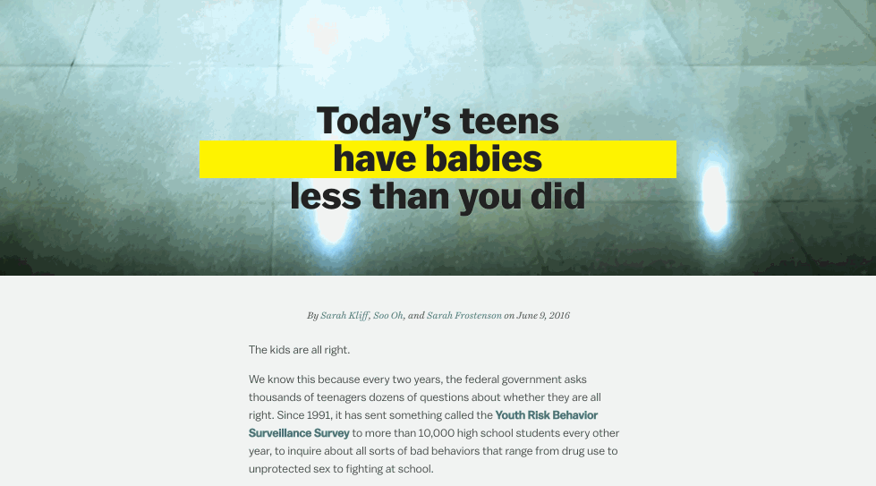
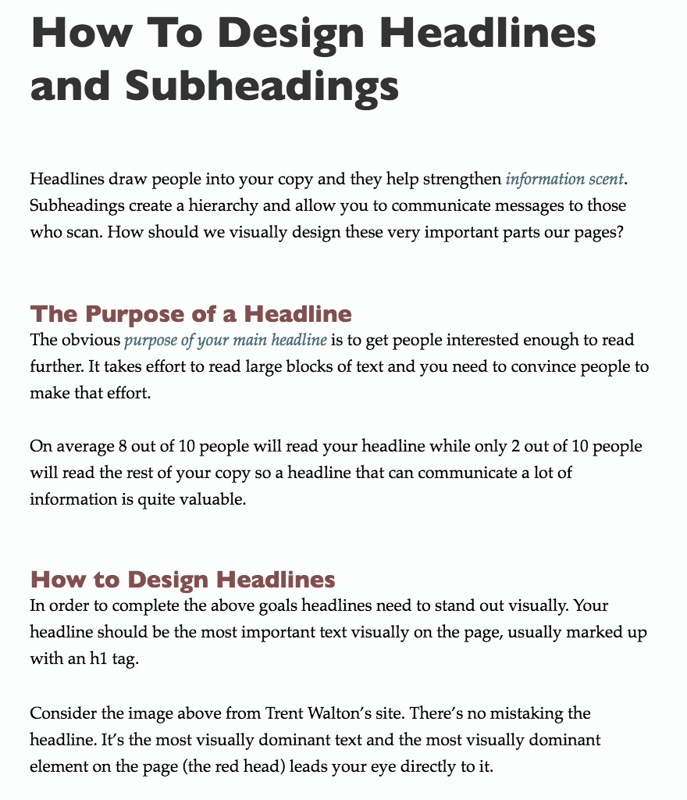
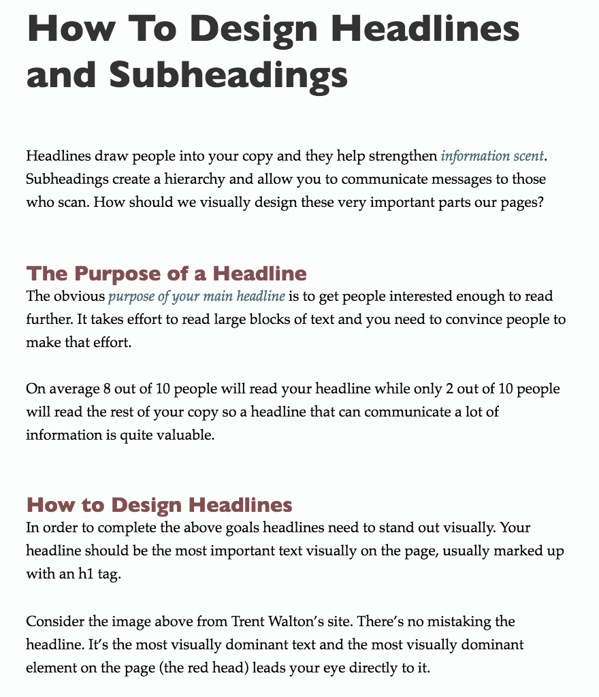

CUNY | Fall 2016
Design & Presentation
Syllabus:
Design in the wild
• NYT: What Makes Simone Biles the World's Best Gymnast
• FiveThirtyEight: Should Prison Sentences Be Based On Crimes That Haven’t Been Committed Yet?
• NYT: The 250 People, Places and Things Donald Trump Has Insulted on Twitter


BREAK
Design = Organization

Fundamentals of design
1. Proximity
2. Alignment
3. Contrast
4. Repetition
1. PROXIMITY
 Via O'Reilly
Via O'Reilly
Table of contents
Contrast
Introduction
Alignment
Repetition
The color wheel
Proximity
Repetition
Shades and tints
Table of contents
Introduction
Design principles
Proximity
Contrast
Alignment
Repetition
Designing with color
The color wheel
Shades and tints
What to avoid …
• Undefined proximity
• Unrelated relationships
• Too many groups/separate elements
• Urge to fill all the empty space

2. ALIGNMENT
Left
Center
Right
Justified
A Tale of Two Cities
Charles Dickens
It was the best of times, it was the worst of times, it was the age of wisdom, it was the age of foolishness, it was the epoch of belief, it was the epoch of incredulity, it was the season of Light, it was the season of Darkness, it was the spring of hope, it was the winter of despair, we had everything before us, we had nothing before us, we were all going direct to Heaven, we were all going direct the other way—in short, the period was so far like the present period, that some of its noisiest authorities insisted on its being received, for good or for evil, in the superlative degree of comparison only.
A Tale of Two Cities
Charles Dickens
It was the best of times, it was the worst of times, it was the age of wisdom, it was the age of foolishness, it was the epoch of belief, it was the epoch of incredulity, it was the season of Light, it was the season of Darkness, it was the spring of hope, it was the winter of despair, we had everything before us, we had nothing before us, we were all going direct to Heaven, we were all going direct the other way—in short, the period was so far like the present period, that some of its noisiest authorities insisted on its being received, for good or for evil, in the superlative degree of comparison only.
A Tale of Two Cities
Charles Dickens
It was the best of times, it was the worst of times, it was the age of wisdom, it was the age of foolishness, it was the epoch of belief, it was the epoch of incredulity, it was the season of Light, it was the season of Darkness, it was the spring of hope, it was the winter of despair, we had everything before us, we had nothing before us, we were all going direct to Heaven, we were all going direct the other way—in short, the period was so far like the present period, that some of its noisiest authorities insisted on its being received, for good or for evil, in the superlative degree of comparison only.
A Tale of Two Cities
Charles Dickens
It was the best of times, it was the worst of times, it was the age of wisdom, it was the age of foolishness, it was the epoch of belief, it was the epoch of incredulity, it was the season of Light, it was the season of Darkness, it was the spring of hope, it was the winter of despair, we had everything before us, we had nothing before us, we were all going direct to Heaven, we were all going direct the other way—in short, the period was so far like the present period, that some of its noisiest authorities insisted on its being received, for good or for evil, in the superlative degree of comparison only.
Center aligned text is often weak and hard to read. Especially when:
• It's meek and lacks purpose
• There is a lot of text (like a paragraph)
But it can work too!
 Via VoxKEY TAKEAWAY:
Be intentional with design
What to avoid …
• More than one alignment
• Unintentional centering
3. CONTRAST
CONTRAST
COLOR
CONTRAST
SIZE/WEIGHT
Heading text
This paragraph text size stands in contrast to the header – it's very different. Looking good!
Heading text
This paragraph text is only slightly smaller than the heading – it's similar but not the same. Avoid!
 Via The Non-Designer's Design Book
Via The Non-Designer's Design Book
What to avoid …
• Wimpy contrast!
• Inconsistency

4. REPETITION
 

REPETITION
FOR EMPHASIS
REPETITION
REVEAL PATTERNS
REPETITION
BREAK PATTERNS
REPETITION
BUILD IDENTITY

What to avoid …
• Too many different repeating elements/ideas
• Too much of the same repeating element/idea